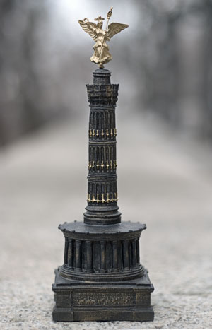

|
DIE SIEGESSÄULE
THE VICTORY COLUMN  10" x 3" x 3" (25cm x 8cm x 8cm) Curiously, there are no souvenirs of the Siegessäule. Only a replica of the angel is for sale at the monument itself - in three different sizes. The Siegessäule Souvenir is an unlimited edition thanks to the generous support from KW - Institute for Contemporary Art Berlin, the Warhol Foundation and the Betlach Family Foundation. |
BY
AURA ROSENBERG
Completed in 1873, the Siegessäule commemorates Germany's victory over France in the Battle of Sedan.
This rallied the German states to unite under the Kaiser. Johann Heinrich Strack's design for the Siegessäule was
inspired by the classic style of his teacher, Friedrich Schinkel. Friedrich Drake built the golden figure of victory that crowns the monument.
In 1939, Albert Speer moved the column from Königsplatz, where it faced the Reichstag, to its present location at the Grosser Stern in the Tiergarten. Speer also added an extra section to the column and broadened the base. This souvenir, however, reflects the original, smaller proportions. In this sense it is a true "souvenir", the memory of an irretrievable past. In his childhood memoir, Berlin Childhood, the German, Jewish philosopher, Walter Benjamin, remembers: "It stood on the broad square like a red date on the calendar. On the last Sedan Day, it should have been torn down. When I was small, one could not imagine a year without 'Sedan Day'. After Sedan only parades remained." Now the Christopher Street Day Parade - which commemorates the Stonewall uprising, the beginning of the gay rights movement - ends at the Siegessäule, as did the Love Parade. Die Siegessäule erinnert an Deutschlands Sieg über Frankreich in der Schlacht von Sedan, 1870. Johann Heinrich Stracks Design für die Siegessäule wurde inspiriert vom klassischen Stil seines Lehreres, Friedrich Schinkel. Von Friedrich Drake stammt der goldenen Siegesengel, der das Monument krönt. 1939 ließ Albert Speer die Säule vom Königsplatz, gegenüber des Reichstags, zu ihrem heutigen Ort am Grossen Stern im Tiergarten verlegen. Speer ließ ein zusätzliches Segment dazusetzen und erweiterte den Sockel. Diese Souvenir jedoch, ist dem Original nachempfunden. In Berliner Kindheit erinnert sich Walter Benjamin: "Sie stand auf dem weiten Platz wie das rote Datum auf dem Abreißkalender. Mit dem letzten Sedantag hätte man sie abreißen sollen. Als ich klein was, konnte man aber ein Jahr ohne Sedantag sich nicht vorstellen. Nach Sedan blieben nur Paraden übrig." Heute enden die Christopher Street Day Parade an der Siegessäule, als auch die Love Parade. Retail Distributors & Online Purchasing Printed Matter, Inc. (New York City) Telephone: +001 -212 -925 -0325 Website: www.printedmatter.org Kunst-Werke Berlin Institute for Contemporary Art (Berlin) Telephone: +0049 -30 -24 -34 -59 -0 Website: www.kw-berlin.de |